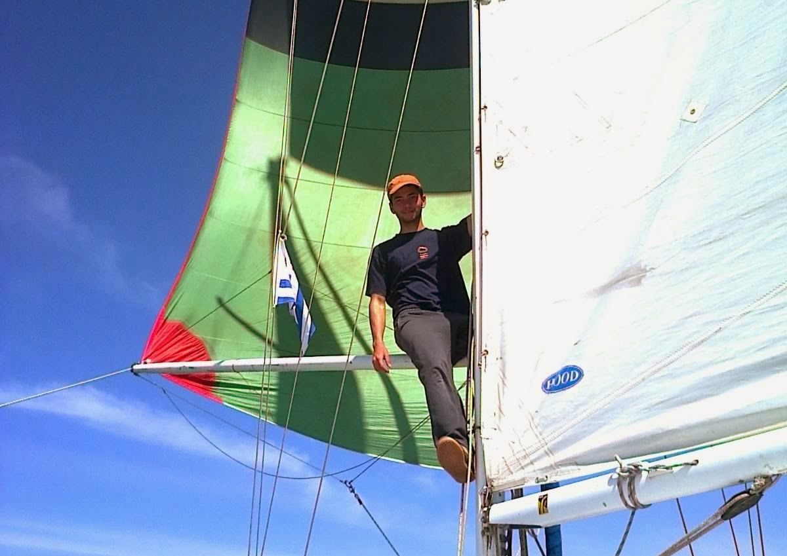

Ignacio Porrini
Instructor de Vela · Deportes Náuticos
Instructor de vela con más de 10 años de trabajo en clubes náuticos de la costa montevideana, enseñando navegación deportiva a niños, adolescentes y adultos. Formación complementaria en navegación oceánica, meteorología, oceanografía y seguridad en el agua.
Experiencia en náutica
Instructor de Vela para Niños, Adolescentes y Adultos — Nautilus Yachting Club
Instructor de Vela para Niños y Adolescentes — Club de Pesca y Náutica La Estacada
Clases particulares y apoyo en grupos de estudio náuticos
- Enseñanza de navegación a vela deportiva en clases grupales e individuales, para alumnos de 7 a 16 años y adultos que se inician en la actividad.
- Instrucción práctica y teórica en Optimist, Snipe, Laser, tabla a vela, Lightning y Micro Class.
- La seguridad como máxima responsabilidad, junto con el respeto al grupo y el disfrute de la actividad.
- Evaluación de condiciones meteorológicas y oceanográficas para definir las salidas; actividades en tierra (físicas o teóricas) cuando no se podía salir al agua.
- Relacionamiento directo con padres y responsables: respuesta a inquietudes y devolución del proceso de aprendizaje.
- Compilación y organización de material didáctico digital para grupos de estudio (cartas náuticas, meteorología marina).
Embarcaciones
Formación y certificación náutica
Curso de Brevet "A" — Instituto 35 Sur
Permiso para gobernar embarcaciones de recreo a motor y/o vela en navegación oceánica.
- Navegación astronómica
- Meteorología — Nivel 1 y Nivel 2
- Comunicaciones y seguridad
- Oceanografía y mareas
Curso ISAF de Entrenamiento para Supervivencia Personal — Instituto Náutico YCU
- Primeros Auxilios (UCM)
- Práctica de balsa salvavidas
Licenciatura en Ciencias de la Atmósfera — UdelaR
Cursos aprobados: Física 1 y Taller de Introducción a la Meteorología.
Otra experiencia laboral
Formación académica
- Licenciatura en Economía — FCEA, UdelaR. Ingreso 2014, 14 asignaturas aprobadas (140 de 360 créditos).
- Licenciatura en Diseño de Comunicación Visual — FADU e IENBA, 2012. Primer año aprobado y una asignatura de segundo.
Idiomas y habilidades
Inglés — 4 años en el Instituto Dickens de Montevideo (2003–2006). Buen nivel de lectura, escucha y escritura; comunicación hablada eficaz.
Comunicación asertiva · Autonomía · Proactividad · Responsabilidad · Cooperación · Adaptabilidad
¿Buscan instructor para su club o escuela?
Estoy disponible para temporadas, cursos de verano, suplencias y clases particulares.
Escribime por WhatsApp